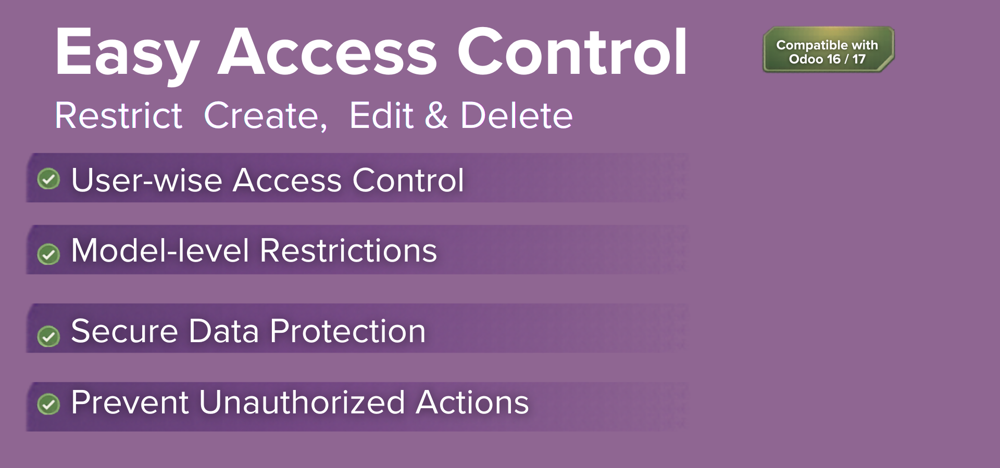
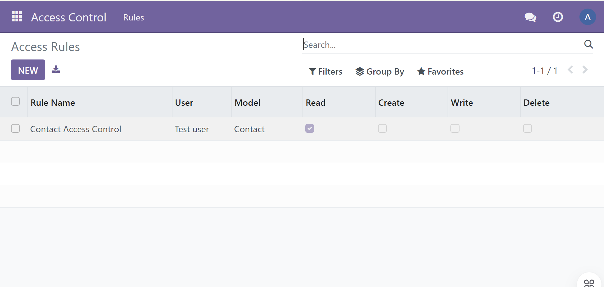
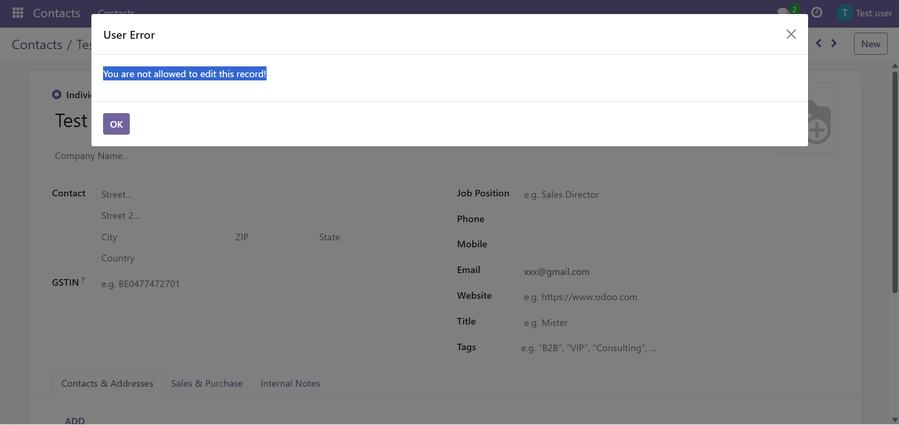
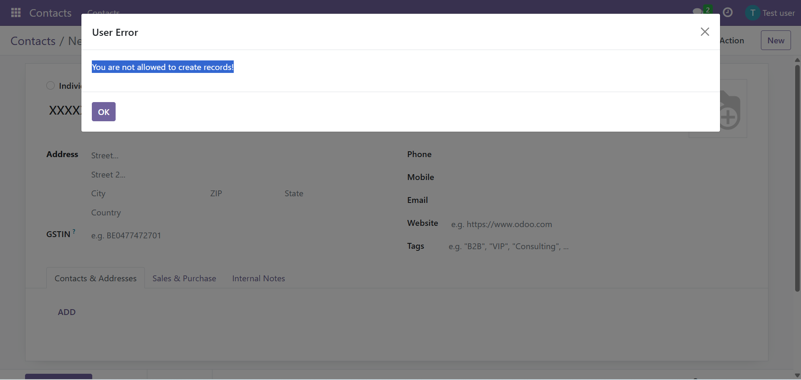
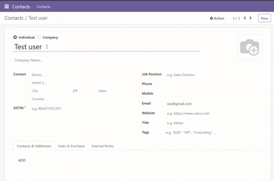

  GNU nano 7.2                                                                                                                                            /opt/odoo/custom-addons/easy_access_control/static/description/index.html
<section style="max-width:1000px; margin:0 auto; font-family:Arial,sans-serif; line-height:1.7; color:#222;">

    <div style="text-align:center; margin-bottom:20px;">
        <h1 style="font-size:34px; margin-bottom:10px;">Easy Access Control</h1>
        <p style="font-size:18px; color:#555;">
            Control user permissions easily in Odoo with simple and effective access restrictions.
        </p>
    </div>

    

    <h2>Overview</h2>
    <p>
        Easy Access Control helps administrators control what users can do inside Odoo.
        The module allows read-only access and restricts create, edit and delete actions for selected users and models.
    </p>

    <h2>Key Features</h2>
    <ul>
        <li>Read-only access control</li>
        <li>Restrict create, edit and delete actions</li>
        <li>Popup warning messages for restricted actions</li>
        <li>User-wise control</li>
        <li>Model-level control</li>
        <li>Simple configuration from one place</li>
    </ul>

    <h2>How It Works</h2>
    <ol>
        <li>Create an access rule</li>
        <li>Select the user and model</li>
        <li>Enable read-only access</li>
        <li>Disable create, edit and delete permissions</li>
        <li>Save and apply instantly</li>
    </ol>

    <h2>Screenshots</h2>

    <h3>1. Set Read Only Access</h3>
    
    <p>Allow read-only access and restrict create, edit and delete actions.</p>

    <h3>2. Configure Access Easily</h3>
    
    <p>Configure access rules quickly by selecting user, model and permissions.</p>

    <h3>3. Edit Action Blocked</h3>
    
    <p>Users are not allowed to edit restricted records.</p>

    <h3>4. Delete Action Restricted</h3>
    
    <p>Restricted users cannot delete protected records.</p>

    <h3>5. Create Action Disabled</h3>
    
    <p>Users cannot create new records when create access is disabled.</p>

    <h2>Demo</h2>
    <p>See how Easy Access Control works in real time.</p>

    

    <h2>Use Cases</h2>
    <ul>
        <li>Protect important contacts and master data</li>
        <li>Prevent accidental changes by staff users</li>
        <li>Allow view access without edit permission</li>
        <li>Improve security in multi-user Odoo environments</li>
    </ul>

    <h2>Compatibility</h2>
    <p>
        Works with Odoo 16.<br/>
        Suitable for Odoo.sh and On-Premise deployments.
    </p>

    <h2 style="text-align:center; margin-top:30px;">Simple. Secure. Effective.</h2>

</section>
